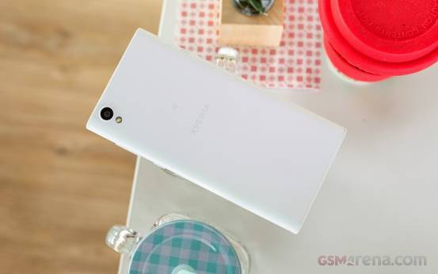
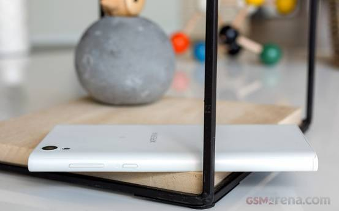

索尼Xperia L1的问世，标志着索尼重新回归了竞争相当激烈的入门级智能手机市场。其实，为普通的入门级用户设计一款人人都喜欢的智能手机，要比打造一款顶级配置的旗舰更困难。也正因为如此，索尼多年来一直都没有加入到入门级产品的竞争中来，而这一次Xperia L1的出现，证明了索尼开始进行新的尝试。
过去，索尼旗下的Xperia E系列机型拥有比较不错的口碑，从防水机身，再到后来的Xperia C系列，知道顶级对Xperia Z系列，索尼在所有产品中，已经形成了自己的风格。
现在，索尼显然又在自己的产品阵营中加入了新的系列，除了名字变化之前，入门级的产品其实整体的差异都并不算大。在之前的Xperia E5身上，我们在有限的预算内体验到了大屏幕、LTE网络连接和高分辨率摄像头。而这款Xperia L1同样定价合理，并且得到了最新版本Android Nougat系统的支持。
也许从配置上看，联发科处理器应该是Xperia L1最大的问题，四核Cortex-A53主频的核心与入门级图形处理器应该在整体表现上不会有太大的惊喜。不过考虑到Nokia 3和Moto C Plus两款竞争对手都是同样的配置，因此也就没什么值得抱怨的了。
索尼对Xperia L1进行了优化，再加上最近关于索尼智能手机销量提升的利好消息，都让我们看到索尼未来在智能手机领域的希望。